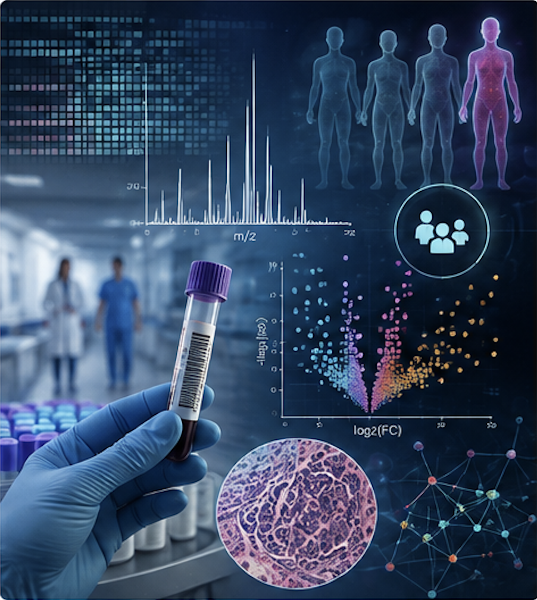
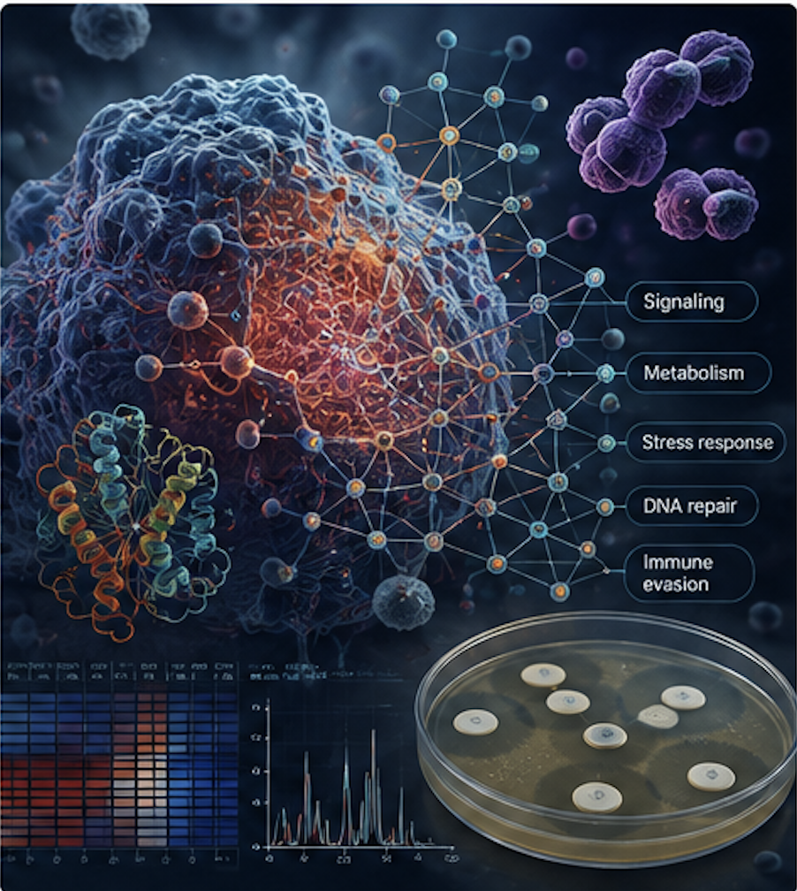
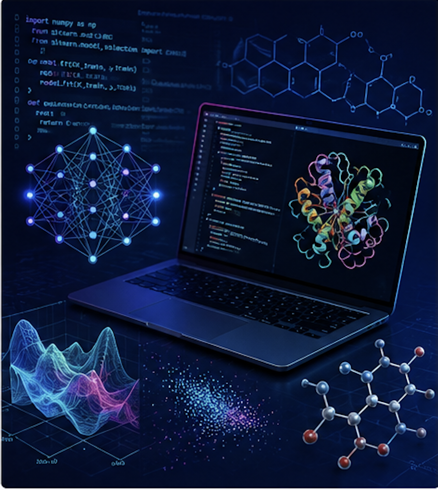

Clinical omics
Biomarkers, molecular diagnostics, and systems medicine through the integration of proteomics, metabolomics, and high-resolution mass spectrometry to improve disease diagnosis, prognosis, and patient stratification.
Research themes
Integrating biochemistry, multi-omics, mass spectrometry, bioinformatics, and computational biology to understand biological systems and translate molecular discoveries into advances in health and precision medicine.

Biomarkers, molecular diagnostics, and systems medicine through the integration of proteomics, metabolomics, and high-resolution mass spectrometry to improve disease diagnosis, prognosis, and patient stratification.

Experimental and computational approaches to uncover the molecular mechanisms underlying health, disease, antimicrobial resistance, and therapeutic response through multi-omics and systems biology.

Bioinformatics, molecular modelling, artificial intelligence, and data integration to interpret complex biological systems, predict molecular interactions, and accelerate translational research.